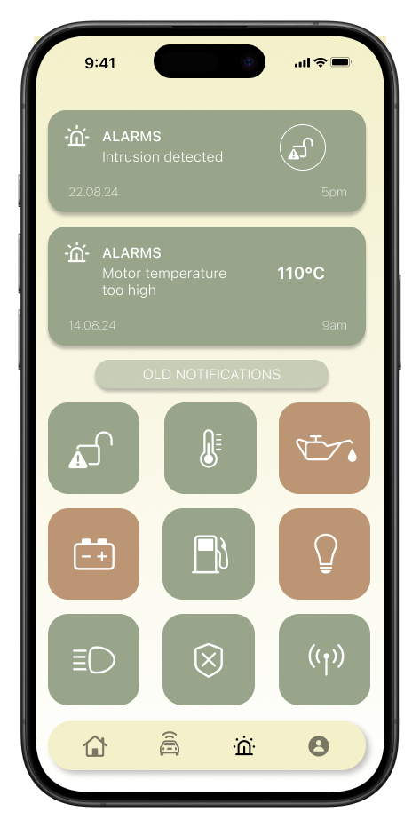
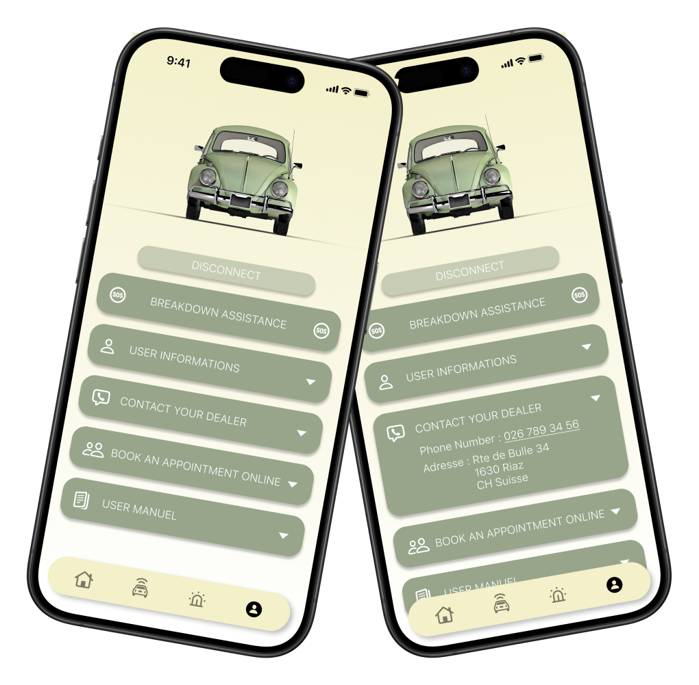
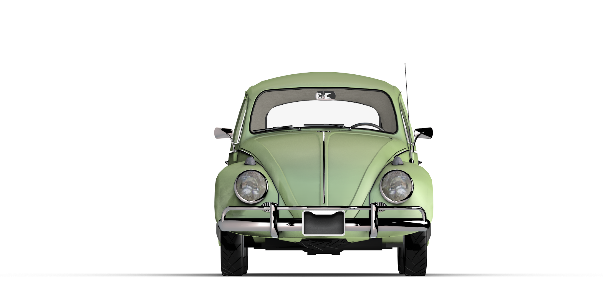

FR
Réaliser un projet d’interface pour une app destinée aux
smartphones.
Cette app, Beetle Connect, permet d’interagir avec les dispositifs
d’origine des VW Beetle (Coccinelle), construites entre 1967 et
2003, et connectés grâce à l’intervention d’un garage spécialisé.
L’app offre un diagnostique en temps réel ainsi qu’un contrôle des
accessoires du véhicule.
EN
Produce an interface project for an app designed for smartphones.
This app, Beetle Connect, allows interaction with the original
devices of VW Beetles built between 1967 and 2003, and connected
through the intervention of a specialized garage.
The app offers real-time diagnostics and control of vehicle
accessories.